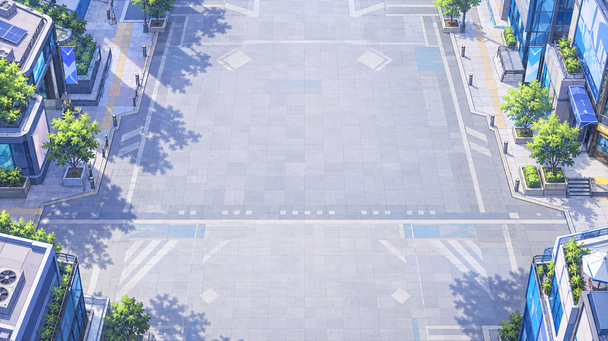
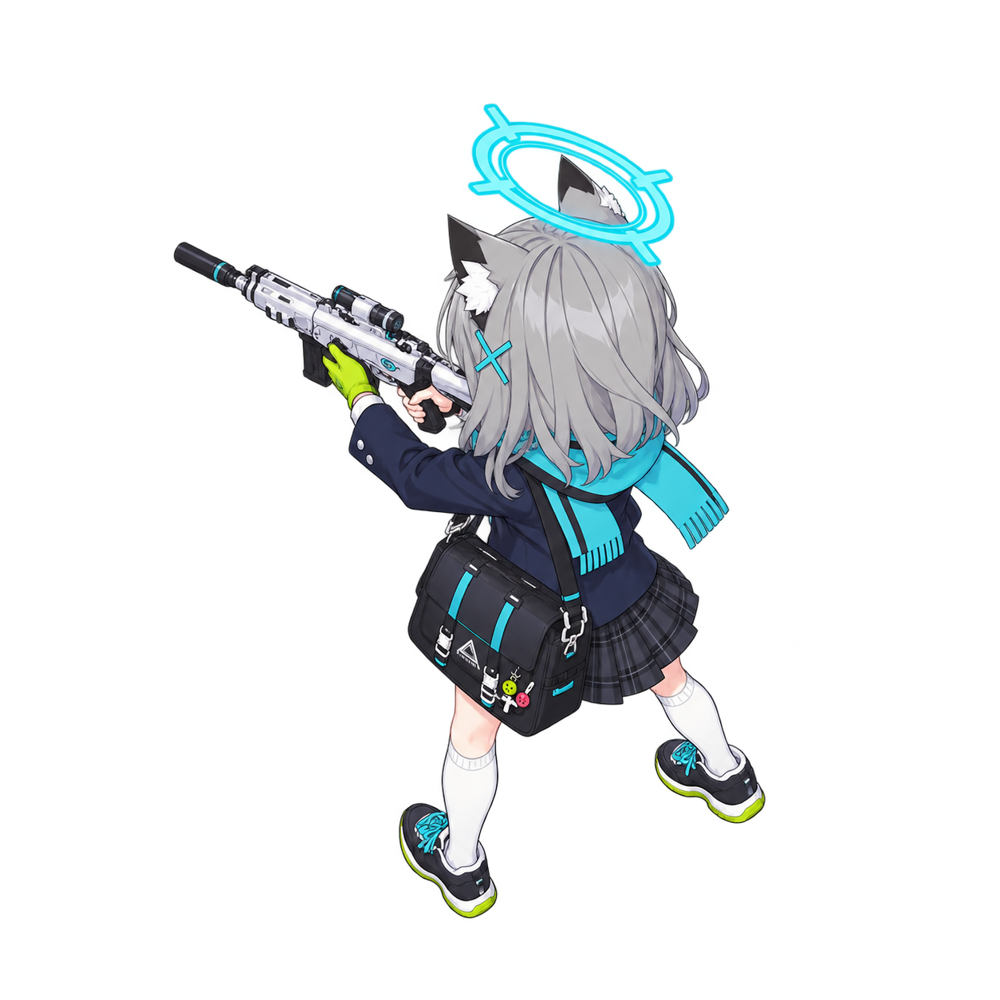

白子 · 俯视战斗素材 v001
在同一张街道底图上比较四种静态关键姿势。候场图显示在侧边，上场图显示在中央发射区域。


上场待机：背侧朝向敌人，保持持枪准备姿态。
01 · 候场待机
02 · 上场待机
03 · 蓄力
04 · 发射
此页用于图片视角和状态对比；角色位置为展示布局。四张图是静态关键姿势，不构成连续动画，也不覆盖全部瞄准方向。脚底参考点为人工估计，最终切帧对齐需进一步校准。阴影、枪口火花、蓄力光效将作为独立图层制作。
素材制作说明 · 完整生成提示词